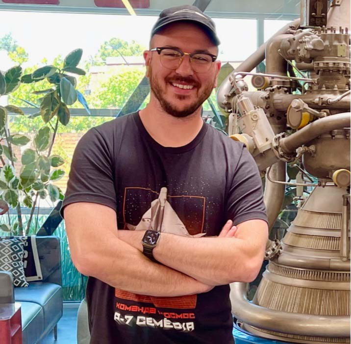
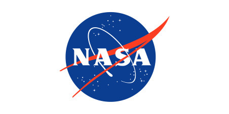
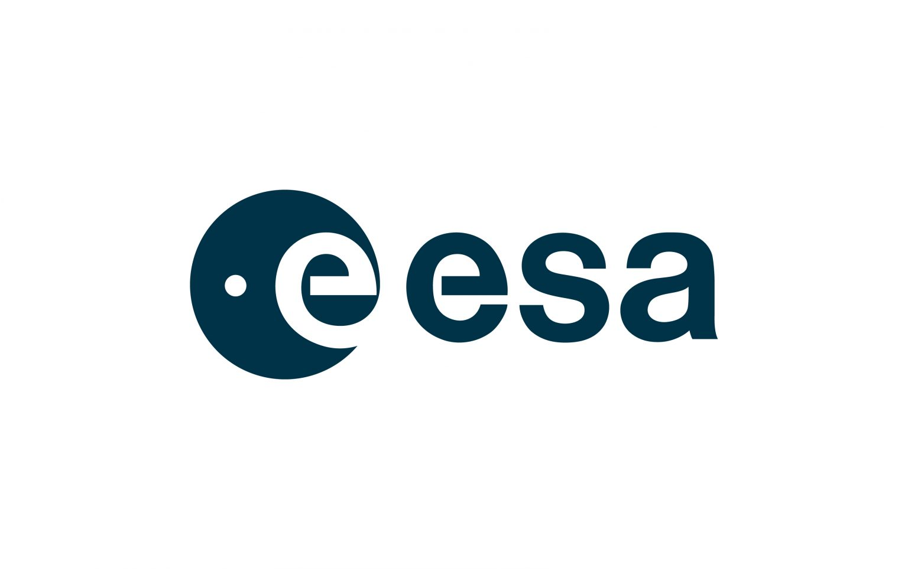

Utforska Rymden Med Hjälp av Experter
Det kan vara svårt att veta var man ska börja när man vill lära sig mer om rymden. Därför har vi samlat några av de mest pålitliga, inspirerande och pedagogiska källorna inom rymdutforskning. Oavsett om du föredrar att titta på videor, läsa artiklar eller följa aktuella rymdnyheter, hittar du här något som passar dig. Dessa resurser är noggrant utvalda för att hjälpa dig att fördjupa din förståelse för allt från raketer och planeter till astronauter och galaxer.
Scott Manley
Scott Manley är en populär YouTuber och rymdentusiast som har blivit känd för sitt unika sätt att förklara komplicerade ämnen som raketvetenskap och orbitalmekanik på ett enkelt och underhållande sätt. Hans videor kombinerar fakta med humor, och han använder ofta simuleringar för att visa hur rymdfärder fungerar i praktiken. Kanalen täcker också aktuella nyheter inom rymdteknik och utforskar historiska händelser inom astronautik. Om du är ny inom ämnet men vill förstå det på djupet, är Scott Manley en utmärkt startpunkt.
Everyday Astronaut
Everyday Astronaut, skapad av Tim Dodd, är en YouTube-kanal och webbplats som har som mål att "göra rymden tillgänglig för alla". Tim förklarar hur raketer fungerar, hur företag som SpaceX och NASA bygger framtidens rymdfärder, och hur olika delar av ett rymduppdrag hänger ihop — från bränsletyper till landning på Mars. Han får ofta tillgång till exklusiva intervjuer och turer i fabriker som bygger raketer, och hans visuella presentationer gör det lätt att hänga med. Kanalen passar både nybörjare och mer tekniskt intresserade.

NASA.gov
NASA:s officiella webbplats är en av de mest pålitliga och omfattande resurserna för alla som vill lära sig mer om rymden. Här kan du hitta detaljerad information om pågående och kommande rymduppdrag, utbildningsmaterial för både elever och lärare, samt tusentals bilder, videor och animeringar från rymden. Webbplatsen har också nyhetsartiklar skrivna av forskare och ingenjörer, och man kan följa satelliter, roveruppdrag och till och med liveutsändningar från Internationella rymdstationen. NASA.gov är perfekt för dig som vill utforska rymden på djupet med hjälp av pålitlig information.

ESA.int
European Space Agency (ESA) är Europas svar på NASA, och deras webbplats är fylld med innehåll om europeiska rymdprojekt och forskning. Här hittar du information om hur Europa bidrar till rymdutforskning — från satelliter som övervakar klimatet till vetenskapliga experiment på rymdstationen. Webbplatsen erbjuder också resurser för lärare, interaktiva verktyg för elever och reportage om astronauter från olika europeiska länder. ESA:s webbplats är särskilt värdefull om du är intresserad av hur rymdsamarbete ser ut från ett internationellt perspektiv.

Space.com
Space.com är en nyhetsplattform som täcker hela rymdområdet, från de senaste vetenskapliga upptäckterna till nya tekniska genombrott inom raketforskning och astronomi. Sidan är perfekt för nybörjare som vill hålla sig uppdaterade utan att drunkna i för tekniska termer. Du hittar guider för att observera stjärnhimlen, recensioner av teleskop, förklaringar av svarta hål, och intervjuer med forskare. Space.com blandar aktuella nyheter med pedagogiskt innehåll, vilket gör den till ett lättillgängligt men ändå informativt alternativ för rymdintresserade i alla åldrar.